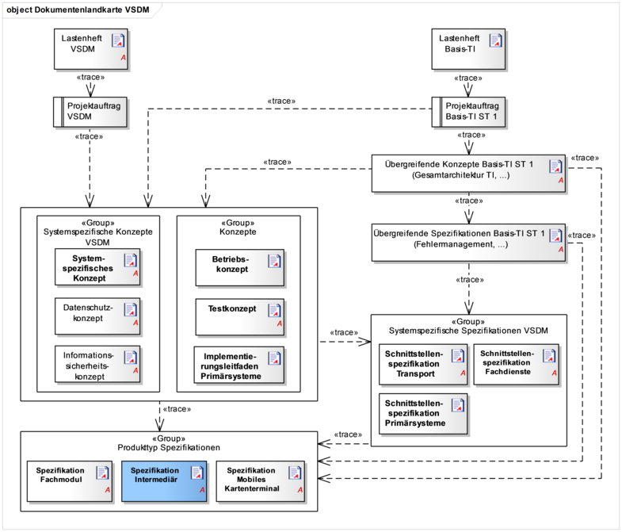
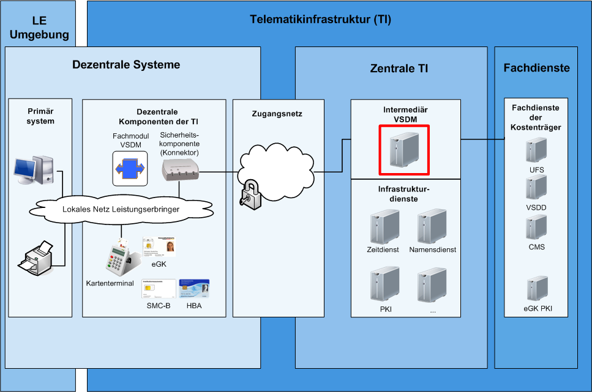

Elektronische Gesundheitskarte und Telematikinfrastruktur
Spezifikation
Intermediär VSDM
| Version | 1.13.0 |
| Revision | 571726 |
| Stand | 02.12.2022 |
| Status | freigegeben |
| Klassifizierung | öffentlich |
| Referenzierung | gemSpec_Intermediaer_VSDM |
Änderung zur Vorversion
Anpassungen des vorliegenden Dokumentes im Vergleich zur Vorversion können Sie der nachfolgenden Tabelle entnehmen.
Dokumentenhistorie
| Version |
Datum |
Kap./ Seite |
Grund der Änderung, besondere Hinweise |
Bearbeitung |
|---|---|---|---|---|
| 0.1.0 |
13.10.11 |
Ersterstellung |
Projekt VSDM |
|
| 1.0.0 |
15.10.12 |
Einarbeitung Gesellschafterkommentare |
gematik |
|
| 1.1.0 |
12.11.12 |
Einarbeitung Kommentare aus der übergreifenden Konsistenzprüfung |
gematik |
|
| 1.2.0 |
06.06.13 |
Einarbeitung Kommentare LA |
gematik |
|
| 1.3.0 |
15.08.13 |
Einarbeitung gemäß Änderungsliste |
gematik |
|
| 1.4.0 |
21.02.14 |
Losübergreifende Synchronisation |
gematik |
|
| 1.5.0 |
17.07.15 |
Einarbeitung Errata 1.4.6 |
gematik |
|
| 1.6.0 |
24.08.16 |
Anpassungen zum Online-Produktivbetrieb (Stufe 1) |
gematik |
|
| 1.7.0 |
28.10.16 |
Anpassungen gemäß Änderungsliste |
gematik |
|
| 1.8.0 |
06.02.17 |
3.6 |
Übernahme in gemSpec_SST_VSDM |
gematik |
| 1.9.0 |
18.12.17 |
Übernahme in OPB2.1, Änderungsliste P15.1 |
gematik |
|
| 1.10.0 |
26.10.18 |
Anpassungen gemäß Änderungsliste P15.9 |
gematik |
|
| 1.11.0 | 15.05.19 | Anpassungen gemäß Änderungsliste P18.1 | gematik | |
| |
|
Anpassungen gemäß Änderungsliste P21.1 |
gematik |
|
| 1.12.0 |
03.02.20 | freigegeben |
gematik |
|
| 1.13.0 | 02.12.22 | Einarbeitung CI_Maintenance_22.5 und Konn_Maintenance_22.6 | gematik |
Das vorliegende Dokument spezifiziert den Produkttyp Intermediär VSDM. Ziel ist es alle Anforderungen an den Intermediär aus den übergreifenden Konzepten aufzugreifen und den Produkttypen zu spezifizieren. Die Spezifikation des Verhaltens und der Schnittstellen des Intermediärs VSDM gewährleistet die Interoperabilität der Produkttypen und die für die Fachanwendung geforderte Funktionalität.
Die Systemlösung der Fachanwendung VSDM ist im systemspezifischen Konzept [gemSysL_VSDM] beschrieben. Es setzt die fachlichen Anforderungen des Lastenheftes auf Systemebene um, zerlegt die Fachanwendung VSDM in die zugehörigen Produkttypen und definiert die Schnittstellen zwischen den einzelnen Produkttypen. Für das Verständnis dieser Spezifikation wird die Kenntnis von [gemSysL_VSDM] vorausgesetzt.
Die übergreifenden Anforderungen an die Transportschnittstelle und Transportsicherung werden separat in der Schnittstellenspezifikationen Transport VSDM [gemSpec_SST_VSDM] behandelt.
Die Abbildung 1 zeigt schematisch die Dokumentenhierarchie im Projekt VSDM, in welcher die Spezifikation Intermediär und die Konzepte und Spezifikationen eingeordnet sind. Die Abbildung stellt nicht die vollständige Dokumentenhierarchie des Projekts Online-Produktivbetrieb (Stufe 1) oder den Trace der Anforderungen dar.

Abbildung 1: Dokumentenhierarchie im Projekt VSDM
In diesem Dokument in Kapitel 1 wird die Zielsetzung des Dokumentes, die notwendigen Grundlagen und die gewählten Methoden dargestellt.
Kapitel 2 enthält eine Zusammenfassung der Aufgabe des Produkttyps Intermediärs im Systemkontext der Fachanwendung VSDM und seiner Funktion.
Kapitel 3 stellt die Ablauflogik innerhalb des Intermediärs VSDM dar. Es wird allgemein das Verhalten beschrieben, sowie im speziellen die Logik zur Ermittlung der Fachdienst-URL, die zu konfigurierenden Daten aufgelistet und die Fehlerbehandlung innerhalb des Intermediärs beschrieben.
Kapitel 4 beschreibt die nicht-funktionalen Anforderungen, insbesondere die Performancevorgaben, und stellt ein Mengengerüst auf.
Die Ausgangsanforderungen dieser Spezifikation und deren Zusammenhang zu den Anforderungen aus dem übergeordneten Konzepten und Spezifikationen werden tabellarisch in Anhang B dargestellt.
Das Dokument ist richtet sich an Hersteller und Anbieter der Intermediäre sowie Hersteller und Anbieter von Produkttypen, die hierzu eine Schnittstelle besitzen.
Dieses Dokument enthält normative Festlegungen zur Telematikinfrastruktur des deutschen Gesundheitswesens. Der Gültigkeitszeitraum der vorliegenden Version und deren Anwendung in Zulassungsverfahren wird durch die gematik GmbH in gesonderten Dokumenten (z. B. Dokumentenlandkarte, Produkttypsteckbrief, Leistungsbeschreibung) festgelegt und bekannt gegeben.
Schutzrechts-/Patentrechtshinweis
Die nachfolgende Spezifikation ist von der gematik allein unter technischen Gesichtspunkten erstellt worden. Im Einzelfall kann nicht ausgeschlossen werden, dass die Implementierung der Spezifikation in technische Schutzrechte Dritter eingreift. Es ist allein Sache des Anbieters oder Herstellers, durch geeignete Maßnahmen dafür Sorge zu tragen, dass von ihm aufgrund der Spezifikation angebotene Produkte und/oder Leistungen nicht gegen Schutzrechte Dritter verstoßen und sich ggf. die erforderlichen Erlaubnisse/Lizenzen von den betroffenen Schutzrechtsinhabern einzuholen. Die gematik GmbH übernimmt insofern keinerlei Gewährleistungen.
Grundlagen für die Ausführungen dieses Dokumentes sind
Innerhalb dieses Dokuments wird auf die technische Umsetzung des Intermediärs VSDM eingegangen. Anforderungen an andere Produkttypen sind nicht Bestandteil des Dokuments. Organisatorische Vorgaben zum Betrieb und Test des Intermediärs sind ebenfalls nicht Bestandteil dieser Spezifikation.
Die Schnittstellen und Operationen der Fachanwendung VSDM sind in den Schnittstellenspezifikation [gemSpec_SST_VSDM] und [gemSpec_SST_FD_VSDM] spezifiziert und werden hier nicht wiederholt.
Das Vorgehen zur Erstellung dieser Spezifikation verwendet einen anforderungszentrierten und modellbasierten Entwicklungsprozess. Dabei werden Auftragsanforderungen über Umsetzungsanforderungen bis hin zu Blattanforderungen verfeinert. Auf Basis der vollständigen und nachvollziehbaren Anforderungen werden verbindliche Artefakte zur Fachanwendung modelliert. Der gesamte Prozess wird durch eine Qualitätssicherung begleitet.
In Anhang B1 (Anforderungszusammenhang) dieses Dokuments werden in der Tabelle 21 die Eingangsanforderungen aufgelistet, die in diesem Ergebnisdokument berücksichtigt sind. In der Spalte "umgesetzt durch" finden sich die eindeutigen Referenzen auf die dazu erarbeiteten Umsetzungsanforderungen. In Anhang B2 stehen die Umsetzungsanforderungen mit ihrem Text und dem entsprechenden Vorgänger.
Sofern im Text des systemspezifischen Konzepts auf die Ausgangsanforderungen verwiesen wird, erfolgt dies in eckigen Klammern, z. B. [VSDM-A_2093]. Wird auf Eingangsanforderungen verwiesen, erfolgt dies in runden Klammern, z. B. (VSDM-A_303).
Die zu einer Eingangsanforderung referenzierte Umsetzungsanforderung spiegelt die erste Ebene des Anforderungsbaumes wieder. Die Verfeinerung dieser Anforderungen zu einem vollständigen Anforderungsbaum erfolgt im Anforderungsmanagement-Tool und nicht im vorliegenden Dokument.
Auf der untersten Ebene des Anforderungsbaums stehen die Blattanforderungen an die jeweiligen Produkttypen, die für eine Zulassung erfüllt werden müssen. Dieses Dokument stellt Blattanforderungen an das Fachmodul, den Intermediär und die Fachdienste VSDM.
Für die genauere Unterscheidung zwischen normativen und informativen Inhalten werden die dem RFC 2119 [RFC2119] entsprechenden in Großbuchstaben geschriebenen, deutschen Schlüsselworte (MUSS, DARF NICHT, SOLL, SOLL NICHT, KANN) verwendet.
Der Intermediär VSDM wird als fachanwendungsspezifischer Dienst in der TI betrieben. Er unterstützt die Anwendungsfälle der Fachanwendung VSDM, indem er Nachrichten vom Fachmodul an die Fachdienste VSDM weiterreicht und die Antworten zustellt. Dazu nutzt der Intermediär die Dienste der zentralen TI-Plattform wie z. B. Zugriff auf Zertifikatsvalidierungsdienste. Der Intermediär muss in hohem Maß verfügbar sein, da die Fachdienste UFS, CMS und VSDD der Kostenträger nicht erreichbar sind, wenn der Intermediär ausfällt.

Abbildung 2: Intermediär im Systemkontext
Der Intermediär VSDM bündelt die Verbindungen der dezentralen TI, indem er Verbindungen des Fachmoduls VSDM terminiert und deutlich weniger Verbindungen zu den Fachdiensten VSDM aufbaut. Zudem setzt er Maßnahmen um, um den Aufbau der sicheren TLS-Verbindung zu beschleunigen.
Zudem verschleiert er gegenüber den Kostenträgern die Identität der Leistungserbringer, um die Bildung von Profilen über Leistungserbringer zu verhindern. Der Intermediär stellt sicher, dass den Kostenträgern das Verbindungszertifikat und die Netzwerkidentität des Leistungserbringers nicht ersichtlich ist.
Der Intermediär führt für jede Nachricht diese Schritte aus:
Damit erfüllt der Intermediär die Funktion eines Gateways auf HTTP-Ebene, dass das Frontend-Netz mit dem Backend-Netz verbindet und die Nachrichten (HTTP payload body und end-to-end HTTP message header) unverändert vom Fachmodul an den Fachdienst weiterleitet.
Der Intermediär stellt sicher, dass zur Vermeidung einer Profilbildung die Identität des Leistungserbringers, der die Online-Prüfung oder die Aktualisierung der eGK durchführt, dem Fachdienst verborgen bleibt. Der Intermediär setzt diese Anforderung um, indem die Netzwerkpakete, die an den Fachdienst gerichtet sind und die vom Fachmodul erhaltene HTTP-Nachricht übermitteln, keine IP-Adresse des Clients erhalten, der die Nachricht erzeugt. Zusätzlich darf der Intermediär nicht die IP-Adresse des Leistungserbringers in der Nachricht für den Fachdienst hinzufügen (z.B. in Form eines custom-HTTP-Headers). [VSDM-A_2761]
Die Adresse des aufzurufenden Fachdienstes wird anhand der Elemente in Tab_INTM_VSDM_01 ermittelt. Der Intermediär muss als Protokoll zur Lokalisierung DNS-Service-Discovery (DNS-SD) nutzen. Die drei Schlüsselelemente, die das Fachmodul zum Aufruf des Intermediärs verwendet, werden vom Intermediär aus der URL nach den Regeln in Tab_INTM_VSDM_01 extrahiert und für die Ermittlung der URL des entsprechenden Fachdienstes verwendet. [VSDM-A_2348] [VSDM-A_2712]
Tabelle 1: Tab_INTM_VSDM_01 – Position der Schlüsselelemente im Path
| Schlüsselelemente |
Position im Path |
|---|---|
| Schnittstellen-Version |
letzter Bestandteil im Path |
| ServiceType |
vorletzter Bestandteil im Path |
| Provider-Kennung |
vorvorletzter Bestandteil im Path |
In Tab_INTM_VSDM_02 wird die Lokalisierung für eine vom Fachmodul beispielhaft verwendete URL https://intermediaer.telematik/vsdm/services/123456780/VSD/2.0/ dargestellt.
Tabelle 2: Tab_INTM_VSDM_02 – Beispiel für Lokalisierung
| Schlüsselelemente |
Wert |
|---|---|
| Schnittstellen-Version |
2.0 |
| ServiceType |
VSD |
| Provider-Kennung |
123456780 |
Falls da ein Lokalisierungsdienst für die Lokalisierung verwendet wird, müssen die Ergebnisse einer erfolgreichen Lokalisierung für einen konfigurierbaren Zeitraum in einem Cache zwischengespeichert werden. Damit wird die Häufigkeit der Anfragen an den Lokalisierungsdienst reduziert. [VSDM-A_2349]
In jeder Systemumgebung der TI (z.B. Test- und Produktivumgebung) muss auf Grund der separaten PKI (Test-PKI und Produktiv-PKI) ein der Testumgebung zugehöriger eigenständiger Intermediär betrieben werden. Aus diesem Grund muss es dem Betreiber möglich sein, bestimmte Parameter anzupassen. Des Weiteren gibt es Parameter die konfigurierbar sein sollten, um zeitnah und flexibel ohne Entwicklungsaufwand auf geänderte Rahmenbedingungen im Produktivbetrieb reagieren zu können.
Für einige in diesem Kapitel aufgeführten Konfigurationsparameter befindet sich eine Übersicht der informativen und empfohlenen Standardwerte im Anhang C. Für Zeitparameter wird empfohlen, die Werte möglichst einheitlich in Sekunden anzugeben.
Tabelle 3: Tab_INTM_VSDM_10 – Allgemeine Konfigurationsparameter [VSDM-A_2350]
| Parameter |
Beschreibung |
|---|---|
| OCSP Timeout |
Zeitraum bevor die Anfrage an einen OCSP-Responder wegen Zeitüberschreitung abgebrochen wird |
| OCSP GracePeriod |
Legt bei der Verwendung von gecachten OCSP-Antworten den maximal zulässigen Zeitraum fest, den die Systemzeit der prüfenden Komponente noch nach dem Zeitpunkt der OCSP-Antwort liegen darf |
| Vertrauensraum (TSL) |
Die TSL aus der die vertrauenswürdigen CA-Zertifikate für die Zertifikatsprüfung bei dem Verbindungsaufbau zu den Fachmodulen und Fachdiensten ermittelt werden. |
| TSL-Ankerzertifikat |
Das X.509-Zertifikat, welches für die Validierung des Signaturzertifikats der TSL verwendet wird. Dieser Konfigurationsparameter umfasst alle Angaben die notwendig sind, um das Zertifikat zu nutzen (z.B. Dateiname, Alias und Passwort). |
| TSL Update Intervall |
Die max. Dauer, nach der der Intermediär spätestens versucht eine neue TSL runterzuladen. |
| Loglevel Ablaufprotokoll |
Gibt die Mindestschwere zu protokollierender Einträge im Ablaufprotokoll an: Info, Warning, Error, Critical, Fatal, Off |
| Loglevel Fehlerprotokoll |
Gibt die Mindestschwere zu protokollierender Einträge im Fehlerprotokoll an: Info, Warning, Error, Critical, Fatal, Off |
| Loglevel Performanceprotokoll |
Gibt an, ob das Performance-Protokoll geführt werden soll. Default-Wert: False |
Tabelle 4: Tab_INTM_VSDM_17 – Konfigurationsparameter für die Verbindung zu den Fachmodulen [VSDM-A_2350]
| Parameter |
Beschreibung |
|---|---|
| Fachmodul Keepalive-Timeout |
Die max. Dauer, für die eine Netzwerkverbindung mit einem Fachmodul im „Idle“-Zustand offengehalten wird. Die Messung des Zeitraumes beginnt nach Aufbau der Verbindung, wird beendet mit dem Erhalt eines HTTP-Requests und beginnt erneut von 0 nach Versenden der HTTP-Response. Wenn der Timeout erreicht wird, dann schließt der Intermediär die Verbindung. |
| Fachmodul SessionResumption-Limit |
Die max. Dauer in der ein Fachmodul eine vorher ausgehandelte Session mittels Session-Resumption wiederverwenden kann. |
| SSL-Server-Zertifikat |
Das für den Verbindungsaufbau zu den Fachmodulen genutzte X.509 Zertifikat. Dieser Konfigurationsparameter umfasst alle Angaben die notwendig sind, um das Zertifikat zu nutzen (z.B. Dateiname, Alias und Passwort). |
| Fachmodul Timeout |
Die max. Dauer nach Erhalt eines HTTP-Requests vom Fachmodul bis der Intermediär einen HTTP-Response an das Fachmodul sendet. Die Messung des Zeitraumes beginnt nach Erhalt eines HTTP-Requests vom Fachmodul und wird beendet mit dem Versenden des zugehörigen HTTP-Response. Bei Erreichen des Timeout sendet der Intermediär ein HTTP-Response mit HTTP-Fehlercode gemäß Kapitel „3.5 Fehlerbehandlung“, Tab_INTM_VSDM_07. |
Tabelle 5: Tab_INTM_VSDM_18 – Konfigurationsparameter für die Verbindung zu den Fachdiensten [VSDM-A_2350]
| Parameter |
Beschreibung |
|---|---|
| Fachdienst Keepalive-Timeout |
Die max. Dauer, für die eine Verbindung mit einem Fachdienst im „Idle“-Zustand offengehalten wird. Die Messung des Zeitraumes beginnt nach dem Aufbau der Verbindung, wird beendet mit dem Versenden eines HTTP-Requests und beginnt erneut von 0 nach dem Erhalt der HTTP-Response. Wenn der Timeout erreicht wird, dann schließt der Intermediär die Verbindung. Dieser Timeout gilt für die permanenten Verbindungen des Connection Pools. |
| SSL-Client-Zertifikat |
Das für den Verbindungsaufbau zu den Fachdiensten VSDM genutzte X.509 Zertifikat. Dieser Konfigurationsparameter umfasst alle Angaben die notwendig sind, um das Zertifikat zu nutzen (z.B. Dateiname, Alias und Passwort). |
| Fachdienst Timeout |
Zeitraum bevor die Anfrage an einen Fachdienst wegen Zeitüberschreitung abgebrochen wird. |
| Fachdienst Connection Pool |
Anzahl der Verbindungen, die der Intermediär zu jedem Fachdienst permanent offen halten muss. |
| Zustand Ausfall Fachdienst-Endpunkt |
Zeitraum nach erkanntem Ausfall eines Fachdienst-Endpunkts (siehe A_17644) in dem der Intermediär keine Verbindungen zu diesem Fachdienst-Endpunkt aufbaut und Fachmodul HTTP Requests mit HTTP Status Code 503 ablehnt. |
Die Parameter für die Zertifikatsprüfung beim Verbindungsaufbau sollten jeweils für die Verbindungen mit den Fachmodulen und den Fachdiensten unabhängig konfigurierbar sein, da für die beiden Strecken unterschiedliche Sicherheitsanforderungen gelten können.
Eine Anpassung der Parameter für die Zertifikatsprüfung beim Verbindungsaufbau ist immer dann notwendig, wenn bestimmten Algorithmen und Schlüssellängen nicht mehr als sicher gelten. Eine Ausnahme ist der Parameter „Admissions“, der angepasst werden muss, wenn neue Rollen für Leistungserbringerumgebungen definiert werden bzw. neue Fachdiensttypen (z. B. ein Kostenträgerdatendienst) über den Intermediär erreichbar sein sollen. Daher muss mindestens die Liste der zulässige Admissions erweiterbar implementiert werden. [VSDM-A_2550] [VSDM-A_2351]
Tabelle 6: Tab_INTM_VSDM_03 – Konfigurationsparameter für die Zertifikatsprüfung [VSDM-A_2547] [VSDM-A_2548]
| Parameter |
Beschreibung |
|---|---|
| Admissions |
Liste der erlaubten Admissions |
| KeyUsages |
Die erwarteten KeyUsages, die das zu prüfende Zertifikat mindestens enthalten muss. |
| ExtendedKeyUsages |
Die erwarteten ExtendedKeyUsages, die das zu prüfende Zertifikat mindestens enthalten muss. |
Tabelle 7: Tab_INTM_VSDM_09 – Konfigurationsparameter für die Verbindungen [VSDM-A_2549]
| Parameter |
Beschreibung |
|---|---|
| Fachdienst Cipher-Suiten |
Gibt die Cipher-Suiten an, die bei der Verbindung zum Fachdienst verwendet werden dürfen. |
| Fachmodul Cipher-Suiten |
Gibt die Cipher-Suiten an, die bei der Verbindung zum Fachmodul verwendet werden dürfen. |
Der Intermediär soll Protokolldateien schreiben, die eine Analyse technischer Vorgänge erlauben. Diese Protokolldateien sind dafür vorgesehen, aufgetretene Fehler zu identifizieren, die Performance zu analysieren und interne Abläufe zu beobachten. In [gemSpec_SST_VSDM] sind die Anforderungen bezüglich des Speicherns von Nachrichten im Fehlerfall formuliert und begründet. Hier werden weitergehende Anforderungen an die Protokollierung des Intermediärs gestellt.
Die Protokolldateien folgen einem einheitlichen Format, das vom Hersteller festgelegt und dokumentiert wird. Es muss geeignet sein, um automatische Auswertungen mit wenig Aufwand durch Dritte zu ermöglichen. Ein Vorbild ist das Weblog des Apache Webservers.
Der Zugriff auf Protokolldateien muss auf autorisierte Personen durch angemessene technische oder organisatorische Maßnahmen eingeschränkt werden. Zudem soll das Schreiben der Protokolldateien einzeln deaktivierbar und wieder aktivierbar sein. Für den Produktivbetrieb soll das Schreiben grundsätzlich deaktiviert sein. [VSDM-A_2669] [VSDM-A_2704]
Aus Datenschutzgründen dürfen die Protokolldateien keine personenbezogenen Daten enthalten, mit Ausnahme der IP-Adresse der anfragenden Systeme sowie dem kassenspezifischen Anteil der ICCSN der betroffenen eGK im Fehlerfall. Im Testbetrieb können jedoch in der Referenz- und Testumgebung die Loglevel unterstützt werden, bei denen Fehlerdetails enthalten sind, die nicht den Datenschutzvorgaben der gematik für den Wirkbetrieb genügen. [VSDM-A_2940-01]
Als Fehlerfall wird alles bezeichnet, was nicht zu einer Weiterleitung einer Anfrage Richtung VSDM-Fachdienst bzw. einer Antwort Richtung Konnektor führt.
Um mehrere Protokolleinträge zu korrelieren, soll bei Start einer Aktion, z.B. Eingang einer HTTP Nachricht, eine (z.B. pseudozufällige) Vorgangsnummer gebildet werden. Diese Vorgangsnummer wird in allen Protokolleinträgen dieser Aktion genutzt. [VSDM-A_2673]
Der Betreiber des Intermediärs MUSS durch geeignete und dokumentierte Maßnahmen sicherstellen, dass aus Datenschutzgründen Protokolleinträge mit personenbeziehbare Daten (z.B. ICCSN, IP-Adressen) vor Verstreichen von 30 Tagen gelöscht werden. [VSDM-A_2748-01]
Die Protokolleinträge im Ablaufprotokoll enthalten mindesten die in Tab_INTM_VSDM_04 aufgezählten Felder. Für jeden Request-Response-Zyklus soll eine Vorgangsnummer erzeugt und alle Protokolleinträge des Request-Response-Zyklus mit dieser Vorgangsnummer erstellt werden. [VSDM-A_2359]
Tabelle 8: Tab_INTM_VSDM_04 – Felder im Ablaufprotokoll
| Feld |
Beschreibung |
|---|---|
| Vorgangsnummer |
Zeichenkette zur Korrelation der zugehörigen Protokolleinträge |
| Zeitpunkt |
Zeitpunkt der Erstellung des Protokolleintrags |
| Beschreibung |
Details zum Ausführungsschritt |
Das Ablaufprotokoll soll die internen Ausführungsschritte enthalten, die einen Einblick in den internen Ablauf für Administratoren, Betreiber und Tester ermöglichen und die Analyse von Fehlersituationen erleichtern.
Zusätzlich, kann der Intermediär für eine erweiterte Protokollierung ein, separat vom Ablaufprotokoll geführtes, Debug-Protokoll implementieren. Ähnlich, für sicherheitsrelevante Ereignisse, kann ein Security-Protokoll geführt werden. [VSDM-A_2942] [VSDM-A_2943]
Die Protokolleinträge im Performance-Protokoll enthalten mindestens die in Tab_INTM_VSDM_05 aufgezählten Felder und müssen geeignet sein, um die tatsächlichen Ausführungszeiten des Intermediärs VSDM mit den Vorgaben in 4.3 zu vergleichen. Dabei muss beachtet werden, dass die Protokolleinträge für die Generierung im [gemRL_Betr_TI] beschriebenen Performance-Reports ausreichend sind. Die Bearbeitungszeiten können aggregiert erfasst werden. Der Grad der Aggregation soll konfigurierbar sein. Für eine Analyse muss es auf Anfrage möglich sein, die Bearbeitungszeiten für Request-Response-Zyklen einzeln zu erfassen. [VSDM-A_2356] [VSDM-A_2357]
Tabelle 9: Tab_INTM_VSDM_05 – Felder im Performanceprotokoll
| Feld |
Beschreibung |
|---|---|
| Vorgangsnummer |
Zeichenkette zur Korrelation des Eintrags mit den Protokolleinträgen der anderen Intermediär Protokolle |
| Vorgangdetails |
Der Inhalt des Feldes ist durch den Hersteller festzulegen, muss aber geeignet sein, um die Performancevorgaben in 4.3 zu verifizieren. |
| Startzeitpunkt |
Bei Einzelerfassung: Startzeitpunkt der Ausführung Bei aggregierter Erfassung: Startzeitpunkt des Erfassungszeitraumes |
| Bearbeitungszeit |
Bei Einzelerfassung: Bearbeitungszeit eines Request-Response-Zyklus in ms Bei aggregierter Erfassung: Summe der Bearbeitungszeiten im Erfassungszeitraum in ms |
| Anzahl |
Bei Einzelerfassung: 1 Bei aggregierter Erfassung: Anzahl der summierten Bearbeitungszeiten |
Das Performanceprotokoll darf keine personenbezogenen Daten enthalten. [VSDM-A_2747]
Die Protokolleinträge im Fehlerprotokoll enthalten mindestens die in Tab_INTM_VSDM_06 aufgezählten Felder. Für jeden in der Verarbeitung des Intermediärs aufgetretenen Fehler wird ein Protokolleintrag geschrieben. Zum Fehler zugehörige Nachrichten müssen protokolliert und über die Vorgangsnummer zugeordnet werden, indem z. B. der Dateiname die Vorgangsnummer enthält. [VSDM-A_2358]
Tabelle 10: Tab_INTM_VSDM_06 – Felder im Fehlerprotokoll
| Feld |
Beschreibung |
|---|---|
| Vorgangsnummer |
Zeichenkette zur Bündelung der zugehörigen Protokolleinträge |
| Fehlercode |
Fehlercode des aufgetretenen Fehlers |
| Zeitpunkt |
Zeitpunkt der Erstellung des Protokolleintrags |
| Fehlerdetails |
Weiterführende Details zur Fehlermeldung |
Die Protokolleinträge im Fachdienst-Verbindungsprotokoll enthalten mindestens die in Tabelle Tab_INTM_VSDM_08 aufgezählten Felder für die Verbindungen zwischen Intermediär und Fachdienst. Für jede Kombination aus Zeitintervall, Intermediär-Client-Instanz und Ziel des Connection Pools Fachdienst-Endpunkt (d.h. der Außenschnittstelle des Fachdiensts), schreibt der Intermediär einen Protokolleintrag. [A_14596]
Tabelle 11: Tab_INTM_VSDM_08 – Felder im Fachdienst-Verbindungsprotokoll
| Feld |
Beschreibung |
|---|---|
| Zeitstempel |
Identifiziert den Ende-Zeitpunkt des Zeitintervalls des Protokolleintrags |
| Ziel |
Fachdienst-Endpunkt |
| Verbindungsanzahl |
Maximale Anzahl von Verbindungen im Zeitintervall |
| Anzahl neuer Verbindungen |
Die Zahl der – im Zeitintervall – neu aufgebauten Verbindungen |
| Anzahl abgebauter Verbindungen |
Die Zahl der – im Zeitintervall – abgebauten Verbindungen |
| Anzahl abgebrochene Verbindungsversuche |
Die Zahl der Verbindungsversuche im Zeitintervall, welche abgebrochen wurden. |
| Anzahl Fachdienst-Timeouts |
Die Zahl der – im Zeitintervall – für den Fachdienst-Endpunkt aufgetretenen Fachdienst-Timeouts |
Die Protokolleinträge im Fachmodul-Verbindungsprotokoll enthalten mindestens die in Tabelle Tab_INTM_VSDM_20 aufgezählten Felder für die Verbindungen zwischen Fachmodul und Intermediär. Für jedes Zeitintervall schreibt der Intermediär einen Protokolleintrag. [A_17216]
Tabelle 12: Tab_INTM_VSDM_20 – Felder im Fachmodul-Verbindungsprotokoll
| Feld |
Beschreibung |
|---|---|
| Zeitstempel |
Identifiziert den Ende-Zeitpunkt des Zeitintervalls des Protokolleintrags |
| Verbindungsanzahl |
Maximale Anzahl von Verbindungen im Zeitintervall |
| Anzahl neuer Verbindungen |
Die Zahl der – im Zeitintervall – neu aufgebauten Verbindungen |
| Anzahl abgebauter Verbindungen |
Die Zahl der – im Zeitintervall – abgebauten Verbindungen |
| Anzahl abgebrochene Verbindungsversuche |
Die Zahl der Verbindungsversuche im Zeitintervall, welche abgebrochen wurden |
| Anzahl Fachmodul-Timeouts |
Die Zahl der – im Zeitintervall – aufgetretenen Fachmodul-Timeouts |
Die Fehlerbehandlung auf Transportebene ist in [gemSpec_SST_VSDM] spezifiziert. In diesem Kapitel werden weitergehende Festlegungen für Fehler in der Verarbeitung des Intermediärs getroffen.
Tritt ein Fehler in der Verarbeitung des Intermediärs auf, antwortet der Intermediär mit einer HTTP-Fehlermeldung gemäß [RFC2616]. Die HTTP-Fehlermeldung muss die Ursache und den passenden HTTP-Fehlercodes gemäß Tab_INTM_VSDM_07 enthalten. Wenn der Fehler keinem der in Tabelle Tab_INTM_VSDM_07 beschriebenen Fällen entspricht, muss der Antwortcode gemäß [RFC2616] gewählt werden. [VSDM-A_2353]
Tritt ein Fehler auf einer tieferen Ebene des OSI-Stacks zwischen Fachmodul VSDM und Intermediär auf, wird keine HTTP-Fehlermeldung erzeugt, sondern der Fehler wird stattdessen auf der Protokollebene behandelt, auf der dieser Fehler aufgetreten ist.
Tabelle 13: Tab_INTM_VSDM_07 – HTTP-Fehlercodes Intermediär
| Auslöser |
HTTP-Fehlercode |
|---|---|
| Wenn die URL nicht der erwarteten Syntax entspricht und die Ermittlung der Parameter zur Lokalisierung fehlschlägt |
400 |
| Wenn die Adresse des entsprechenden Fachdienstes nicht ermittelt werden kann |
502 |
| Wenn der Fachdienst-Endpunkt ausgefallen ist |
503 |
| Wenn der Fachdienst nicht in der erwarteten Zeit antwortet |
504 |
| Wenn keine Verbindung zum Fachdienst besteht, weil z.B. das Netzwerk unterbrochen ist oder beim Verbindungsaufbau zum Fachdienst ein TLS bezogener Fehler auftritt |
502 oder 504 |
| Wenn der Fehler keinem der oben beschriebenen auslösenden Fehlern entspricht |
siehe [RFC2616] |
Der Intermediär muss mindestens so hoch verfügbar sein wie die Fachdienste VSDM, da sonst die Funktionalität der Fachanwendung VSDM nur eingeschränkt nutzbar ist. Die Festlegung zur Zielverfügbarkeit für den Intermediär ist in [gemSpec_Perf] getroffen.
Der Intermediär wird in der Pilotierung mit initial wenig Lastaufkommen eingesetzt und muss geeignet sein, in diesem Umfeld performant die zu erwartende Last zu verarbeiten. Darüber hinaus kann der Anbieter anstreben, das Produkt in Einsatzszenarien mit höheren Lastaufkommen einzusetzen. In diesem Fall muss der Intermediär mit einer zunehmenden Anzahl von beteiligten Versicherten und Leistungserbringern skalieren.
Der Intermediär muss die in [gemSpec_Perf] definierten Bearbeitungszeiten einhalten, damit die Anwendungsfälle der Fachanwendung VSDM in akzeptabler Zeit ausgeführt werden. Die Performancevorgaben richten sich an die reine Bearbeitungszeit des Intermediärs ohne Kommunikation mit externen Systemen.
Dieses Kapitel beschreibt die Grundlagen und Annahmen für das Mengengerüst, das zur Kalkulation der Anfragen pro Sekunde und Anzahl der Verbindungsaufnahmen genutzt wird. Es werden das Mengengerüst des [gemLH_VSDM] und das Performancemodell [gemKPT_Perf_VSDM] zugrunde gelegt. Die Zahlen beziehen sich auf das maximale Mengengerüst bei Teilnahme aller Versicherten und Vollausstattung der Telematikinfrastruktur.
Tabelle 14: Tab_INTM_VSDM_11 – Grundlagen des Mengengerüsts
| Wert |
Quelle |
|
|---|---|---|
| Gesetzlich Krankenversicherte der Bundesrepublik Deutschland 2008 |
70.244.000 |
[gemLH_VSDM] |
| Onlineprüfung und -aktualisierung mit Aktualisierung der VSD pro Quartal |
3.512.000 |
[gemLH_VSDM] |
| Onlineprüfung und -aktualisierung ohne Aktualisierung der VSD |
146.150.000 |
[gemLH_VSDM] |
| Angenommene Dauer eines Arbeitstages in Stunden |
8 |
- |
| Anzahl der Requests-Response-Zyklen bei VSD-Aktualisierung ohne Update |
1 |
[gemSysL_VSDM] |
| Anzahl der Requests-Response-Zyklen bei VSD-Aktualisierung mit Update |
5 |
[gemSysL_VSDM] |
Tabelle 15: Tab_INTM_VSDM_12 – Nachrichtengröße, aus typisierten Nachrichten ermittelt
| Wert |
|
|---|---|
| Typische Größe eines UFS-Requests in Byte |
500 |
| Typische Größe einer UFS-Response in Byte |
700 |
| Durchschnittliche Größe eines VSDD/CMS-Requests in Byte |
700 |
| Durchschnittliche Größe einer VSDD/CMS-Response in Byte |
5.000 |
Tabelle 16: Tab_INTM_VSDM_13 – Antwortzeiten der Fachdienste im 95%-Grenzwert-Szenario
| Wert |
Quelle |
|
|---|---|---|
| Antwortzeit auf UFS-Anfrage in ms |
70 280 |
[gemKPT_Perf_VSDM] |
| Antwortzeit auf VSDD-Anfrage in ms (gemittelt aus PerformUpdates und GetNextCommandPackage) |
230 1396 |
[gemKPT_Perf_VSDM] |
Aufgrund der Regelung, einmal pro Arzt und Versicherten im Quartal die Aktualität der VSD zu prüfen, kommt es in der ersten Woche eines Quartals vermehrt zu Anfragen zur Aktualität der VSD. Um die zu erwartende Spitzenlast abzuschätzen, wird im Mengengerüst der Tabelle Tab_INTM_VSDM_14 angenommen, dass 25 % aller Anfragen im Quartal in der ersten Woche erfolgen. Zusätzlich wird das Lastaufkommen mit einem Sicherheitsfaktor von 4 multipliziert, um zu erwartenden Lastspitzen abzudecken.
Der Intermediär muss unter den oben getroffenen Annahmen die Anzahl der gleichzeitigen Anfragen der Tabelle Tab_INTM_VSDM_14 in der in definierten Ausführungszeit verarbeiten.
Tabelle 17: Tab_INTM_VSDM_14 – Anzahl der Anfragen
| Wert |
|
|---|---|
| Anzahl der UFS-Anfragen in der ersten Woche des Quartals |
37.415.625 |
| Anzahl der VSDD-Anfragen in der ersten Woche des Quartals |
3.512.250 |
| Anfragen für Intermediär in der ersten Woche des Quartals |
163.711.500 40.927.875 (ohne Sicherheitsfaktor 4) |
| Anzahl der Anfragen an den Intermediär pro Sekunde in der ersten Woche des Quartals |
1136 284 (ohne Sicherheitsfaktor 4) |
| Anzahl der Anfragen an Intermediär pro Sekunde bei 1.000.000 Versicherten in der ersten Woche des Quartals |
etwa 16 etwa 4 (ohne Sicherheitsfaktor 4) |
Für die Anzahl der Verbindungen vom Fachmodul zum Intermediär müssen die Anzahl der niedergelassenen Ärzte und Zahnärzte, Krankenhäuser und weiterer Clientsysteme in Tabelle Tab_INTM_VSDM_15 berücksichtigt werden. Für jeden Arzt und Zahnarzt wird vereinfachend angenommen, dass jeder über ein Fachmodul verfügt. Weitere Einflussfaktoren wie Urlaubszeiten, MVZ oder Gemeinschaftspraxen mit mehreren niedergelassenen Ärzten, Zahnärzten werden nicht weiter betrachtet.
Es wird angenommen, dass der Verbindungsaufbau von jedem Fachmodul einmal täglich erfolgt und dass sich ohne weitere Maßnahmen die Verbindungsversuche in der ersten Stunde des Arbeitstages konzentrieren. Der Intermediär muss die Anzahl der Verbindungsversuche in Tabelle Tab_INTM_VSDM_16 bewältigen.
Tabelle 18: Tab_INTM_VSDM_15 – Mengengerüst zur Berechnung der Anzahl der Verbindungen
| Wert |
Quelle |
|
|---|---|---|
| Anzahl niedergelassener Ärzte |
125.000 |
[KBV] |
| Anzahl niedergelassener Psychotherapeuten (nicht ärztliche Psychotherapeuten) |
17.000 |
[KBV] |
| Anzahl niedergelassener Zahnärzte |
56.000 |
[KZBV2010] |
| Anzahl Krankenhäuser |
2.000 |
[DKG2010] |
| Gerundete Gesamtanzahl der Fachmodule |
200.000 |
Tabelle 19: Tab_INTM_VSDM_16 – Anzahl der Verbindungsversuche [VSDM-A_2706]
| Wert |
|
|---|---|
| Anzahl der Verbindungsversuche in den ersten Stunde des Arbeitstages bei 200.000 Fachmodule pro Sekunde |
56 |
| Anzahl der Verbindungsversuche in den ersten Stunde des Arbeitstages bei 20.000 Fachmodulen pro Sekunde (gerundet) |
6 |
Falls der Betreiber für seine interne Zwecke ein Accounting durchführt, kann der Intermediär die dafür notwendigen Funktionen implementieren. Der Betreiber muss dabei die geltenden Anforderungen an Datenschutz und Datensicherheit einhalten.
Die URL des Intermediärs soll über einen SRV Resource Record in der Domain der Service Zone TI (DOMAIN_SRVZONE_TI) des VPN-Zugangsdienstes bereitgestellt werden. Jeder VPN-Zugangsdienst-Standort hat eine eigene Domain für die Service Zone TI, in der der passende SRV-Eintrag enthalten ist. Im VSDM Fachmodul wird der Servicename als Parameter fest hinterlegt.
Der Anbieter des VSDM Intermediär MUSS für jeden Standort des VPN-Zugangsdienstes, über den der Intermediär bereitgestellt wird, einen SRV und TXT Resource Record mit dem Bezeichner _vsdmintermediaer._tcp.<DOMAIN_SRVZONE_TI> in der DNS Domain der Service Zone TI (DOMAIN_SRVZONE_TI) des VPN-Zugangsdienstes eintragen. Die Resource Records MÜSSEN dem Format in Tabelle Tab_INTM_VSDM_19 entsprechen. Der SRV Resource Record MUSS genau einen FQDN enthalten. [VSDM-A_3006]
Tabelle 20: Tab_INTM_VSDM_19 –Format der Resource Records [VSDM-A_3006]
| Record |
Format |
|---|---|
| SRV |
[TTL] IN SRV [Priority] [Weight] [Port] [FQDN] |
| TXT |
[TTL] IN TXT "txtvers=[Version]" "path=[Prefix]" |
| Abkürzung |
Bedeutung |
|---|---|
| CCS |
Card Communication Service |
| CMP |
Komponentendiagramm |
| CMS |
Card Management System |
| DNS |
Domain Name System |
| DNS-SD |
DNS Service Discovery |
| eGK |
elektronische Gesundheitskarte |
| GVD |
Geschützte Versichertendaten |
| HTTP |
Hypertext Transfer Protocols |
| ICCSN |
Integrated Circuit Card Serial Number |
| ID |
Identification |
| IIN |
Issuer Identification Number |
| ISO |
International Organization for Standardization |
| OCSP |
Online Certificate Status Protocol |
| SMC (B/A/KTR) |
Security Module Card |
| SSL |
Secure Sockets Layer |
| TI |
Telematikinfrastruktur |
| TLS |
Transport Layer Security, die Vorgängerbezeichnung ist SSL |
| UFS |
Update Flag Service |
| SOAP |
Simple Object Access Protocol |
| VSD |
Versichertenstammdaten |
| VSDD |
Versichertenstammdatendienst |
| VSDM |
Versichertenstammdatenmanagement |
| WSDL |
Web Services Description Language |
| XML |
Extensible Markup Language |
Das Glossar wird als eigenständiges Dokument (vgl [gemGlossar_TI]) zur Verfügung gestellt.
Die nachfolgende Tabelle enthält die Bezeichnung der in dem vorliegenden Dokument referenzierten Dokumente der gematik zur Telematikinfrastruktur. Der mit der vorliegenden Version korrelierende Entwicklungsstand dieser Konzepte und Spezifikationen wird pro Release in einer Dokumentenlandkarte definiert; Version und Stand der referenzierten Dokumente sind daher in der nachfolgenden Tabelle nicht aufgeführt. Deren zu diesem Dokument jeweils gültige Versionsnummer entnehmen Sie bitte der aktuellen, auf der Internetseite der gematik veröffentlichten Dokumentenlandkarte, in der die vorliegende Version aufgeführt wird.
| [Quelle] |
Herausgeber (Erscheinungsdatum): Titel |
|---|---|
| [gemGlossar_TI] |
gematik: Glossar der Telematikinfrastruktur |
| [gemKPT_Perf_VSDM] |
gematik: Systemspezifisches Konzept Performanceuntersuchung (VSDM) |
| [gemLH_VSDM] |
gematik: Lastenheft VSDM |
| [gemRL_Betr_TI] |
gematik: Übergreifenden Richtlinien zum Betrieb der TI |
| [gemSpec_OID] |
gematik: Spezifikation Festlegung von OIDs |
| [gemSpec_OM] |
gematik: Übergreifende Spezifikation Operations und Maintenance |
| [gemSpec_Perf] |
gematik: Performance und Mengengerüst TI-Plattform |
| [gemSysL_VSDM] |
gematik: Systemspezifisches Konzept Versichertenstammdatenmanagement |
| [gemKPT_Betr_VSDM] |
gematik: Betriebskonzept VSDM |
| [gemSpec_SST_FD_VSDM] |
gematik: Schnittstellenspezifikation Fachdienste (UFS/VSDD/CMS) |
| [gemSpec_SST_VSDM] |
gematik: Schnittstellenspezifikation Transport VSDM |
| [Quelle] |
Herausgeber (Erscheinungsdatum): Titel |
|---|---|
| [DKG2010] |
Deutsche Krankenhaus Gesellschaft (DKG): Kenngrößen für den Konnektor im Krankenhaus |
| [KBV] |
Kassenärztliche Bundesvereinigung, Grunddaten 2010 http://www.kbv.de/publikationen/125.html |
| [KZBV2010] |
Kassenzahnärztliche Bundesvereinigung (Jahrbuch 2011) http://www.kzbv.de/statistische-basisdaten.5.de.html |
| [RFC2119] |
RFC 2119 (März 1997): Key words for use in RFCs to Indicate Requirement Levels S. Bradner, http://tools.ietf.org/html/rfc2119 |
| [RFC2616] |
RFC 2616 (Juni 1999): Hypertext Transfer Protocol – HTTP/1.1 http://tools.ietf.org/html/rfc2616 |
Tabelle 21: Eingangsanforderungen mit Nachweis der Abdeckung
| AFO-ID |
Quelle |
Beschreibung |
Umgesetzt durch |
|---|---|---|---|
| GS-A_2062 |
StGB, § 203, Absatz 1 [gemÜK_DS_TI] |
Die TI MUSS gewährleisten, dass durch ihren Einsatz der uneingeschränkte Schutz der Schweigepflicht der Heil- und Gesundheitsberufe in der TI gewährleistet werden kann. |
VSDM-A_2747 VSDM-A_2748-01 VSDM-A_2940-01 |
| GS-A_2063 |
StGB, § 203, Absatz 1 [gemÜK_DS_TI] |
Die TI MUSS gewährleisten, dass durch ihren Einsatz das Vertrauensverhältnis zwischen Arzt und Patienten in der TI gewährleistet werden kann. |
VSDM-A_2747 VSDM-A_2748-01 VSDM-A_2940-01 |
| GS-A_2125 |
BDSG, § 9 BDSG, § 9, Anlage [gemÜK_DS_TI] |
Die TI MUSS zur Gewährleistung der Anforderungen des Datenschutzes technische Maßnahmen umsetzen, wenn deren Aufwand gegenüber organisatorischen Maßnahmen in einem angemessenen Verhältnis zum angestrebten Schutzzweck steht. |
VSDM-A_2748-01 VSDM-A_2761 VSDM-A_2940-01 |
| GS-A_2128 |
BDSG, § 4 BVerfG 27, 1 1969 [gemÜK_DS_TI] |
Die TI MUSS durch technische Maßnahmen eine unerlaubte Profilbildung in der TI erschweren bzw. verhindern. |
VSDM-A_2761 |
| GS-A_2130 |
BDSG, § 3a [gemÜK_DS_TI] |
Die TI MUSS sicherstellen, dass die Erhebung, Verarbeitung und Nutzung personenbezogener Daten in der TI nur entsprechend ihrer Erforderlichkeit erfolgt. |
VSDM-A_2747 |
| GS-A_2131 |
BDSG, § 3a [gemÜK_DS_TI] |
Die TI MUSS sicherstellen, dass die Datenspeicherung und der Zugriff auf Daten einer Fachanwendung in der TI anonymisiert oder pseudonymisiert werden, soweit dies nach dem Verwendungszweck möglich ist und keinen im Verhältnis zu dem angestrebten Schutzzweck unverhältnismäßigen Aufwand erfordert. |
VSDM-A_2761 |
| GS-A_2136 |
BDSG, § 3a [gemÜK_DS_TI] |
Die TI MUSS sicherstellen, dass bei der Erzeugung von Protokolldaten das Ziel der Datensparsamkeit berücksichtigt wird. |
VSDM-A_2747 |
| GS-A_2223 |
[gemÜK_DS_TI] |
Die TI MUSS sicherstellen, dass das Datenschutz-Schutzziel der Zweckbindung in der gesamten TI im gesamten Lebenszyklus berücksichtigt wird. |
VSDM-A_2747 VSDM-A_2748-01 VSDM-A_2761 VSDM-A_2940-01 |
| GS-A_3205 |
BasisTI-LH_2 [gemÜK_Test_TI] |
Die TI SOLL an den Außenschnittstellen aller Produkttypen ein Logging von Events zur Verfügung stellen: (Verzicht ist nur möglich, wenn Einsatz für den Produkttyp technisch nicht möglich oder wirtschaftlich nicht sinnvoll ist.) |
VSDM-A_2358 |
| GS-A_3206 |
[gemÜK_Test_TI] |
Die TI muss sich bei der Festlegung des Detailgrads der Logdaten für die Außenschnittstelle der Produkttypen an den Erfordernissen für eine Analyse von Fehlerzuständen im Wirkbetrieb orientieren. |
VSDM-A_2358 |
| GS-A_3785 |
[gemSpec_OM] |
Alle Produkttypen der TI MÜSSEN folgende allgemeine Vorgaben zur lokalen Fehlerbehandlung berücksichtigen: - Fehler, die während der lokalen Verarbeitung auftreten, MÜSSEN erkannt, verarbeit und im Rahmen einer Fehlermeldung an den aufrufenden Produkttyp gemeldet werden. - Für Fehler, die eine für den Anwender sichtbare Auswirkung haben, MÜSSEN folgende Vorgaben berücksichtigt werden: o Bei direkter Meldung an den Anwender MUSS die Fehlermeldung für den Anwender direkt verständlich sein und es SOLL die Ursache bzw. die Bezeichnung für den Ausnahmefall ersichtlich sein. o Bei Meldung der Fehlermeldung an verarbeitende Systeme, MUSS die Fehlermeldung geeignet dafür sein, dass das verarbeitende System eine Fehlermeldung erzeugen kann, die für den Anwender verständlich ist, und bei der die Ursache bzw. die Bezeichnung für den Ausnahmefall ersichtlich ist. |
VSDM-A_2353 VSDM-A_2358 |
| GS-A_3794 |
[gemSpec_OM] |
Alle Produkttypen der TI MÜSSEN bei der Verarbeitung von (durch sie empfangenen) Fehlermeldungen folgende allgemeine Vorgaben berücksichtigen: - Empfangene Fehlermeldungen KÖNNEN als Remote-Fehler protokolliert werden. - Durch empfangene Fehlermeldungen resultierende Folgefehler KÖNNEN an die Fehlermeldung angefügt werden. - Für weitergeleitete bzw. bearbeitete Fehlermeldungen, die eine für den Anwender sichtbare Auswirkung haben, MÜSSEN folgende Vorgaben berücksichtigt werden: o Bei direkter Meldung an den Anwender MUSS die weitergeleitete bzw. bearbeitete Fehlermeldung für den Anwender direkt verständlich sein und es MUSS die Ursache bzw. die Bezeichnung für den Ausnahmefall ersichtlich sein. o Bei Meldung der weitergeleiteten bzw. bearbeiteten Fehlermeldung an verarbeitende Systeme, MUSS die Fehlermeldung geeignet dafür sein, dass das weiter verarbeitende System eine Fehlermeldung erzeugen kann, die für den Anwender verständlich ist, und bei der die Ursache bzw. die Bezeichnung für den Ausnahmefall ersichtlich ist. |
VSDM-A_2358 |
| GS-A_4549 |
[gemSpec_OM] |
Produkttypen KÖNNEN ein Ablaufprotokoll für durchlaufende Anwendungsfälle und Nachrichten implementieren. |
VSDM-A_2359 |
| GS-A_4550 |
[gemSpec_OM] |
Produkttypen KÖNNEN ein PerformanceLog implementieren. |
VSDM-A_2356 VSDM-A_2357 |
| GS-A_4551 |
[gemSpec_OM] |
Produkttypen KÖNNEN im Testbetrieb einen DebugLog implementieren, der eine erweiterte Protokollierung für Testzwecke ermöglicht. |
VSDM-A_2942 |
| GS-A_4561 |
[gemSpec_OM] |
Alle Produkttypen der TI MÜSSEN, falls ein lokaler Protokollspeicher (FehlerLog) technisch möglich ist, lokal erkannte Fehler und Remote-Fehler im FehlerLog protokollieren. |
VSDM-A_2358 |
| GS-A_4562 |
[gemSpec_OM] |
Produkttypen KÖNNEN ein SecurityLog für sicherheitsrelevante Ereignisse implementieren. |
VSDM-A_2943 |
| GS-A_4859 |
[gemSpec_OM] |
Die Hersteller und Anbieter von Produkten MÜSSEN im Rahmen von Testmaßnahmen intern in Produkten anfallende Logdaten zeitnah extern verfügbar machen. |
VSDM-A_2669 |
| GS-A_4860 |
[gemSpec_OM] |
Hersteller und Anbieter von Produkten MÜSSEN sicherstellen, dass der Zugriff auf gesammelte Logdaten im Rahmen von Testmaßnahmen nur autorisierten Personen gestattet wird. |
VSDM-A_2669 |
| GS-A_4861 |
[gemSpec_OM] |
Fachanwendungen SOLLEN die folgende Informationen in einem Ablaufprotokoll für jeden Vorgang erfassen, der ausgeführt wurde: Vorgangsbezeichner, Datum mit Uhrzeit von Beginn und Ende, vollständiger Name des Vorgangs, Beschreibung des Vorgangs inkl. des Ergebnisses: Erfolg oder Fehlermeldung (Returnwert/Fehlercode). |
VSDM-A_2359 |
| VSDM-A_133 |
Themenworkshop Datenschutz- und Sicherheit vom 12.08.2010 VSDM-LH_1 |
Die Anwendung VSDM MUSS unter Nutzung von Leistungsmerkmalen der TI-Plattform sicherstellen, dass die Netzwerkidentität des Leistungserbringers am Fachdienst nicht ermittelbar ist. |
VSDM-A_2761 |
| VSDM-A_2059 |
[gemSysL_VSDM] |
Die Fachanwendung VSDM MUSS die in der Tabelle "Tab_VSDM_SysL_05 – Leistungsanforderungen Anwendungsfall "Automatische Onlineprüfung VSD" genannten Leistungsanforderungen erfüllen. |
VSDM-A_2706 |
| VSDM-A_2120 |
[gemSysL_VSDM] |
Die Fachanwendung VSDM MUSS für die Schnittstellen Fehlermeldungen mit einer einheitlichen Fehlerstruktur für die nachnutzenden Systeme definieren. |
VSDM-A_2353 |
| VSDM-A_2126 |
[gemSysL_VSDM] |
Der Intermediär VSDM MUSS Log-Einträge zur Analyse von Abläufen, Performance und Fehlerzuständen schreiben. |
VSDM-A_2356 VSDM-A_2357 VSDM-A_2358 VSDM-A_2359 VSDM-A_2673 VSDM-A_2704 VSDM-A_2942 VSDM-A_2943 |
| VSDM-A_2128 |
[gemSysL_VSDM] |
Der Intermediär VSDM MUSS dem berechtigten Akteur das Auslesen der eigenen Log-Einträge ermöglichen. |
VSDM-A_2669 |
| VSDM-A_2137 |
[gemSysL_VSDM] |
Der Intermediär VSDM MUSS das Verbindungszertifikat des Fachmoduls VSDM beim Verbindungsaufbau prüfen. |
VSDM-A_2350 VSDM-A_2547 VSDM-A_2550 |
| VSDM-A_2142 |
[gemSysL_VSDM] |
Die Fachanwendung VSDM MUSS im Falle eines Abbruchs einer Aktivität bzw. eines Anwendungsfalles eine Fehlermeldung für alle nachnutzenden Systeme erzeugen, die Produkttyp, Betreiber und Fehlerursache eindeutig identifiziert und Referenzen zu Details des Fehlers enthält. |
VSDM-A_2353 |
| VSDM-A_2144 |
[gemSysL_VSDM] |
Der Intermediär VSDM KANN zur Lokalisierung der Fachdienste den Servicetype, die Provider-Kennung und die Schnittstellenversion zur Verwendung an der Schnittstelle I_DNS_Service_Localization ermitteln. |
VSDM-A_2348 VSDM-A_2349 VSDM-A_2712 |
| VSDM-A_2162 |
[gemSysL_VSDM] |
Der Intermediär VSDM MUSS bestehende, sichere Verbindung zur Fachdienstschnittstelle bis zu einer konfigurierbaren Zeitspanne wiederverwenden. |
VSDM-A_2350 |
| VSDM-A_2171 |
[gemSysL_VSDM] |
Der Intermediär VSDM MUSS den Verbindungsaufbau abbrechen, wenn der Zertifikatsvalidierungsdienst nicht erfolgreich antwortet, das Zertifikat gesperrt oder nicht gültig ist. |
VSDM-A_2353 |
| VSDM-A_2337 |
[gemSysL_VSDM] |
Der Intermediär VSDM MUSS das Verbindungszertifikat des aufgerufenen Fachdienstes beim Verbindungsaufbau prüfen. |
VSDM-A_2350 VSDM-A_2351 VSDM-A_2548 VSDM-A_2549 |
| VSDM-A_26 |
VSDM-LH_1 |
Die Anwendung VSDM MUSS unter Nutzung von Leistungsmerkmalen der TI-Plattform gewährleisten, dass im Rahmen des Versichertenstammdatenmanagements eine Profilbildung über die anfragenden Leistungserbringer für einen Kostenträger unmöglich ist. |
VSDM-A_2761 |
| VSDM-A_68 |
VSDM-LH_1 |
Die Anwendung VSDM MUSS unter Nutzung von Leistungsmerkmalen der TI-Plattform bei Onlineprüfung und -aktualisierung der Versichertenstammdaten gewährleisten, dass die Identität des anfragenden Leistungserbringers anonymisiert wird, um eine Profilbildung zu vermeiden. |
VSDM-A_2761 |
VSDM-A_2348
Der Intermediär VSDM MUSS die URL des Fachdienstes anhand der in Tabelle Tab_INTM_VSDM_01 festgelegten Parameter Provider-Kennung, ServiceType und Schnittstellen-Version Parameter ermitteln.
VSDM-A_2349
Der Intermediär VSDM MUSS das Ergebnis einer erfolgreichen Lokalisierung für einen konfigurierbaren Zeitraum zwischenspeichern um die Häufigkeit der Anfragen an den Verzeichnisdienst zu reduzieren.
VSDM-A_2350
Der Intermediär VSDM MUSS die in Tabelle Tab_INTM_VSDM_10, Tab_INTM_VSDM_17 und Tab_INTM_VSDM_18 aufgezählten Parameter dem Betreiber zur Konfiguration anbieten.
VSDM-A_2351
Der Intermediär VSDM MUSS die Liste der zulässige Admissions für die Zertifikatsprüfung beim Verbindungsaufbau zu den Fachdiensten dem Betreiber zur Konfiguration anbieten, so dass zusätzliche Fachdienste wie z.B. ein Kostenträgerdatendienst hinzugefügt werden können.
VSDM-A_2353
Der Intermediär VSDM MUSS bei Fehlern in der eigenen Verarbeitung HTTP-Fehlermeldungen erstellen, die den passenden HTTP-Fehlercodes gemäß der Tab_INTM_VSDM_07 zur Ursache enthalten.
VSDM-A_2356
Der Intermediär VSDM SOLL ein Performanceprotokoll schreiben, dass die in Tabelle Tab_INTM_VSDM_05 genannten Felder pro Protokolleintrag enthält.
VSDM-A_2357
Der Intermediär VSDM MUSS ein Performanceprotokoll schreiben, dass geeignet ist, um die Performancevorgaben bezüglich der Ausführungszeit des Intermediärs VSDM zu überprüfen.
VSDM-A_2358
Der Intermediär VSDM MUSS bei Fehlern in der eigenen Verarbeitung ein Fehlerprotokoll schreiben, dass den Header der fehlerverursachenden Nachricht und die in Tabelle Tab_INTM_VSDM_06 genannten Felder pro Protokolleintrag enthält.
VSDM-A_2359
Der Intermediär VSDM MUSS ein Ablaufprotokoll mit mindestens den in Tab_INTM_VSDM_04 genannten Felder schreiben.
VSDM-A_2547
Der Intermediär VSDM MUSS die in Tabelle Tab_INTM_VSDM_03 aufgezählten Parameter für die Zertifikatsprüfung beim Verbindungsaufbau zum Fachmodulen dem Betreiber zur Konfiguration anbieten.
VSDM-A_2548
Der Intermediär VSDM MUSS die in Tabelle Tab_INTM_VSDM_03 aufgezählten Parameter für die Zertifikatsprüfung beim Verbindungsaufbau zu den Fachdiensten dem Betreiber zur Konfiguration anbieten.
VSDM-A_2549
Der Intermediär VSDM SOLL die in Tabelle Tab_INTM_VSDM_09 aufgezählten Parameter zur Konfiguration anbieten.
VSDM-A_2550
Der Intermediär VSDM MUSS die Liste der zulässige Admissions für die Zertifikatsprüfung beim Verbindungsaufbau zu den Fachmodulen dem Betreiber zur Konfiguration anbieten.
VSDM-A_2669
Der Intermediär VSDM MUSS den Zugriff auf Protokolldateien auf autorisierte Personen durch angemessene technische oder organisatorische und dokumentierte Maßnahmen einschränken.
VSDM-A_2673
Der Intermediär VSDM MUSS eine Vorgangsnummer bei Eingang einer HTTP Nachricht bilden, um alle zugehörigen Protokolleinträge zur Weiterleitung dieser Nachricht zu korrelieren.
VSDM-A_2704
Der Intermediär VSDM MUSS das Aktivieren und Deaktivieren der einzelnen Protokolle (Ablauf, Performance, Fehler) ermöglichen.
VSDM-A_2706
Der Intermediär VSDM MUSS die in der Tabelle Tab_INTM_VSDM_16 vorgegebenen Zahlen für die Anzahl der Verbindungsversuche abhängig von der tatsächlichen Anzahl von Fachmodulen im Wirkbetrieb einhalten.
<=
VSDM-A_2712
Der Intermediär VSDM MUSS für die Ermittlung der URL des aufzurufenden Fachdienstes den DNS-SD benutzen.
VSDM-A_2747
Der Intermediär VSDM DARF NICHT personenbezogene Daten im Performanceprotokoll speichern.
VSDM-A_2748-01
Der Betreiber des Intermediärs MUSS durch geeignete und dokumentierte Maßnahmen sicherstellen, dass aus Datenschutzgründen Protokolleinträge mit personenbeziehbaren Daten (z.B. IP-Adressen) vor Verstreichen von 30 Tagen gelöscht werden. <=
VSDM-A_2761
Der Intermediär VSDM DARF NICHT die IP-Adresse des Leistungserbringers in der Nachricht für den Fachdienst hinzufügen, damit keine Profilbildung möglich ist.
VSDM-A_2940-01
Der Intermediär DARF personenbezogene Daten in seinen Protokolldateien NICHT speichern, mit Ausnahme der IP-Adresse der anfragenden Systeme sowie dem kassenspezifischen Anteil der ICCSN der betroffenen eGK im Fehlerfall.
<=
VSDM-A_2942
Der Intermediär VSDM KANN einen Debug-Protokoll implementieren, das eine erweiterte Protokollierung für Testzwecke ermöglicht.
VSDM-A_2943
Der Intermediär VSDM KANN einen Sicherheitsprotokoll für sicherheitsrelevante Ereignisse implementieren.
VSDM-A_3006
Der Anbieter des VSDM Intermediär MUSS für jeden Standort des VPN-Zugangsdienstes, über den der Intermediär bereitgestellt wird, einen SRV und TXT Resource Record mit dem Bezeichner _vsdmintermediaer._tcp.<DOMAIN_SRVZONE_TI> in der DNS Domain der Service Zone TI (DOMAIN_SRVZONE_TI) des VPN-Zugangsdienstes eintragen. Die Resource Records MÜSSEN dem Format in Tabelle Tab_INTM_VSDM_19 entsprechen. Der SRV Resource Record MUSS genau einen FQDN enthalten.
<=
A_14596
Der Intermediär VSDM MUSS ein Fachdienst-Verbindungsprotokoll mit mindestens den in Tab_INTM_VSDM_08 genannten Felder für die Verbindungen zwischen Intermediär und Fachdienst schreiben. Für jede Kombination aus Zeitintervall (konfigurierbar in Sekunden, Defaultwert: 60) und Ziel des Connection Pools MUSS der Intermediär VSDM einen Eintrag in dieses Protokoll schreiben. Aus dem Fachdienst-Verbindungsprotokoll MUSS der Intermediär-Client hervorgehen (z. B. aus dem Dateinamen oder als Eintrag in der Datei), von dem das Protokoll geschrieben wurde.
<=
A_17216
Der Intermediär VSDM MUSS ein Fachmodul-Verbindungsprotokoll mit mindestens den in Tab_INTM_VSDM_20 genannten Feldern für die Verbindungen zwischen Fachmodul und Intermediär schreiben. Für jedes Zeitintervall (konfigurierbar in Sekunden; Defaultwert: 60) MUSS der Intermediär VSDM einen Eintrag in dieses Protokoll schreiben. Aus dem Fachmodul-Verbindungsprotokoll MUSS der Intermediär-Server hervorgehen (z. B. aus dem Dateinamen oder als Eintrag in der Datei), von dem das Protokoll geschrieben wurde.
<=
In diesem Anhang werden für die in dieser Spezifikation aufgeführten Konfigurationsparameter empfohlenen Standardwerte, sofern sinnvoll, angegeben. Bei diesen Werten handelt es sich nicht um normative Vorgaben, sondern lediglich um empfohlene Werte. Die jeweiligen konkreten Werte, werden im Betrieb festgelegt bzw. ergeben sich aus dem jeweilig geltenden Spezifikationen.
Tabelle 22: Empfohlene Default-Konfiguration für die allgemeinen Parameter
| Parameter |
Defaultwert |
|---|---|
| OCSP Timeout |
10 Sekunden |
| OCSP GracePeriod |
5 Minuten |
Tabelle 23: Empfohlene Default-Konfiguration für die Verbindung zu den Fachmodulen
| Parameter |
Defaultwert |
|---|---|
| Fachmodul Keepalive-Timeout |
5 Minuten |
| Fachmodul SessionResumption-Limit |
12 Stunden (720 Minuten) |
| SSL-Server-Zertifikat |
- |
| Fachmodul Vertrauensraum (TSL) |
- |
| Fachmodul TSL-Ankerzertifikat |
- |
| Fachmodul TSL Update Intervall |
24 Stunden (1440 Minuten) |
Tabelle 24: Empfohlene Default-Konfiguration für die Verbindung zu den Fachdiensten
| Parameter |
Defaultwert |
|---|---|
| Fachdienst Keepalive-Timeout |
5 Minuten |
| SSL-Client-Zertifikat |
- |
| Fachdienst Vertrauensraum (TSL) |
- |
| Fachdienst TSL-Ankerzertifikat |
- |
| Fachdienst TSL Update Intervall |
24 Stunden (1440 Minuten) |
| Fachdienst Timeout |
10 Sekunden |
| Fachdienst Connection Pool |
2 |
| Fachmodul Timeout |
10 Sekunden |
| Zustand Ausfall Fachdienst Endpunkt |
10 Sekunden |
Tabelle 25: Empfohlene Default-Konfiguration für die Fachmodul Zertifikatsprüfung
| Parameter |
Defaultwert (siehe auch [gemSpec_OID] für Werte) |
|---|---|
| Admissions |
oid_praxis_arzt oid_zahnarztpraxis oid_praxis_psychotherapeut oid_krankenhaus oid_oeffentliche_apotheke oid_krankenhausapotheke oid_bundeswehrapotheke oid_mobile_einrichtung_rettungsdienst oid_kostentraeger |
| KeyUsages |
digitalSignature |
| ExtendedKeyUsages |
clientAuth (1.3.6.1.5.5.7.3.2) |
Tabelle 26: Empfohlene Default-Konfiguration für die Fachdienst Zertifikatsprüfung
| Parameter |
Defaultwert (siehe auch [gemSpec_OID] für Werte) |
|---|---|
| Admissions |
oid_vsdd oid_cms oid_ufs |
| KeyUsages |
digitalSignature |
| ExtendedKeyUsages |
serverAuth (1.3.6.1.5.5.7.3.1) |